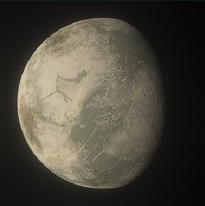

--------------------------------------------------------------------------------------------------------------------------------------------------------------------------
The G0 V star is a Yellow Dwarf star with 6 planets in its orbit. It has a mass of approximately 0.97819 M, a luminosity of approximately 0.93256, and a temperature of approximately 5756.85 C or 10394.33 F.
G0 V stars, also known as yellow dwarfs, are a common type of main-sequence star found in the universe. They fall under the spectral classification of G0, indicating a moderate surface temperature and a significant emission of visible light. Similar to our Sun, G0 V stars are relatively stable, generating energy through nuclear fusion in their cores. This process involves the combination of hydrogen atoms to form helium, releasing vast amounts of energy. G0 V stars share similarities with our Sun in terms of size, mass, and temperature, though they are slightly hotter and brighter.
The study of G0 V stars is of great interest to astronomers due to their potential as hosts for exoplanets and the possibility of supporting life. These stars provide valuable insights into stellar evolution and the potential for habitable worlds. Investigating G0 V stars and their planetary systems allows scientists to deepen their understanding of the conditions necessary for the development and sustainability of life beyond our own planet.

--------------------------------------------------------------------------------------------------------------------------------------------------------------------------
--------------------------------------------------------------------------------------------------------------------------------------------------------------------------
The average day on Aetheria Prime, also known as HIP 184131, It has 14 days a year and has a mass of around 0.2624 million tons with a temperature of about 462.56 degrees Celsius and 864.608 degrees Fahrenheit. This planet has been around for 10 years and has 5 moons, including Luminaire-1 or HIP 18413 1.1. The other 4 moons are asteroids.
Aetheria Prime is a captivating planet that stands out with its peculiar green atmosphere, creating an otherworldly appearance. The entire planet is blanketed in a mesmerizing greenish glow, a result of various gases and particulates present in the atmosphere. The atmosphere is alive with shimmering bands of energy, producing a surreal and ethereal display that enchants observers. Diverging from Jupiter, Aetheria Prime is a searing world of extreme heat. Its surface is constantly shaped by intense volcanic activity, where molten rock flows as rivers and towering plumes of steam and gas erupt into the air. The planet's expansive rocky plains are interrupted by bubbling hot springs and geothermal vents, adding to its distinctive features.
The eerie and alien light cast by the green atmospheric haze intensifies the planet's mysterious allure. Occasional bursts of electrical discharges crackle within the clouds, resulting in flickering flashes of green lightning that illuminate the sky. Aetheria Prime's climate is characterized by turbulent and powerful storms raging across its surface, driven by the intense heat and atmospheric dynamics. Fierce winds roar through jagged canyons and gorges, creating an echoing howl that reverberates throughout the planet. Overall, Aetheria Prime presents a visually striking yet inhospitable world, with its enigmatic green atmosphere and scorching temperatures. While bearing some resemblance to Jupiter, it possesses unique and captivating qualities that set it apart.

--------------------------------------------------------------------------------------------------------------------------------------------------------------------------
Veridora, also known as HIP 184132, is a warm, arid, subterranean planet with a mass of about 0.17842M and a temperature of about 220.41 Celsius or 428.738 Fahrenheit. Since it's 10 years old, there are 50 days in a year, and It has six moons, six of which are asteroids
Veridora is a warm and arid subterra world with a golden-yellow desert landscape. Its surface is marked by expansive dunes sculpted by relentless winds. Rocky outcrops and canyons add to the rugged terrain. The atmosphere carries a subtle yellowish hue, creating a warm and hazy ambiance. Scattered oases offer glimpses of green amid the desert expanse. Veridora presents an opportunity for exploration and scientific study, with its unique geology and potential for subterranean life. Overall, Veridora is a captivating planet resembling Mars but distinguished by its arid subterra environment and golden-yellow landscape. Its rugged beauty and scientific potential make it an intriguing destination for exploration and research.
--------------------------------------------------------------------------------------------------------------------------------------------------------------------------